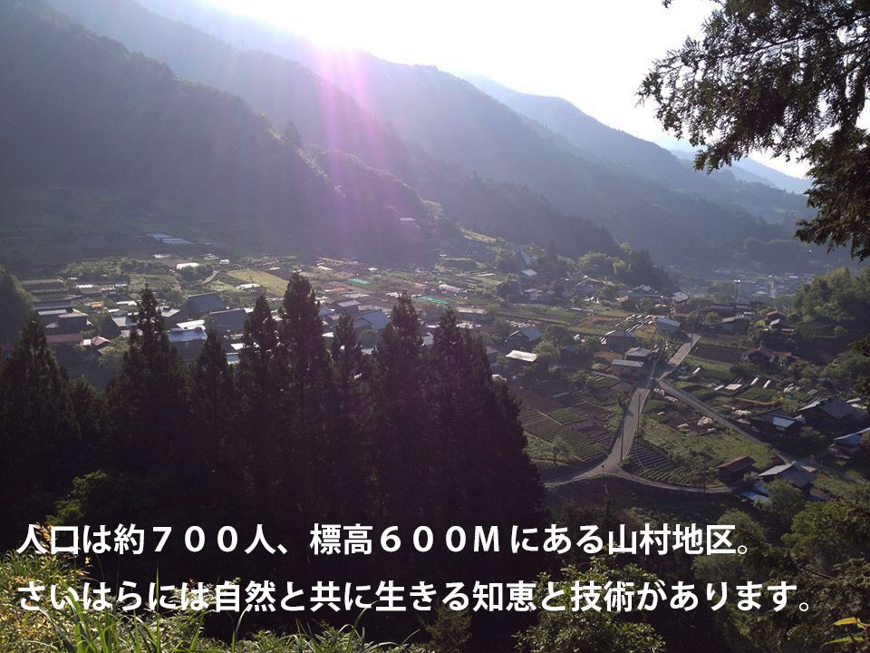

さいはら
山梨県上野原市西原（さいはら）は東京・新宿から約８０km。西東京から山梨県へ入ったところ位置します。人口約７００人、標高６００Mの山村地区です。過疎化・高齢化が進むその村には自然と向き合う知恵や技があります。その暮らし・地域文化を学び受け継いでいくことをミッションに若者たちが今、集まっています。
アクセス
電車で
JR新宿駅から中央線本線大月行きに乗り約１時間、上野原駅下車、北口・富士急山梨バス「飯尾（いいお）」方面行きに乗り約40分、「学校前」下車。
車で
中央自動車道・上野原ICより上野原市街へ。国道２０号線の県道３３号分岐を小菅方面へ１６km、県道３３号の途中、県道１８号へ左折（上野原丹波山線）